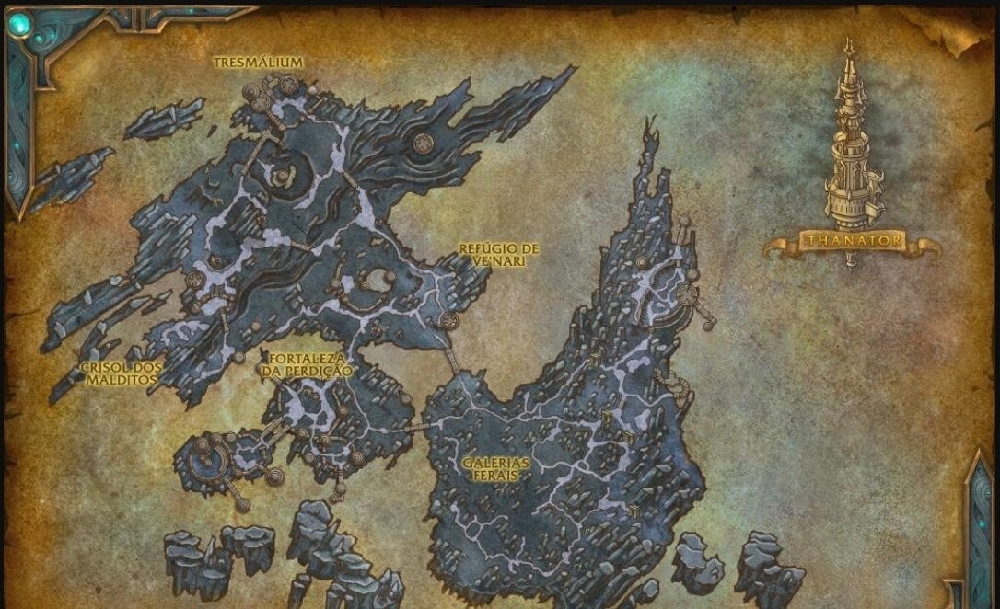

Mapa da Gorja
Passe o cursor ou toque nos pontos roxos para ver o que aconteceu em cada lugar.

A GorjaUm lugar feito de coisas descartadas. Não há manhã, não há portas, e nada fica inteiro a não ser que algo esteja mantendo inteiro. A linha dourada é o caminho que o grupo percorreu; a roxa leva à segunda fenda.